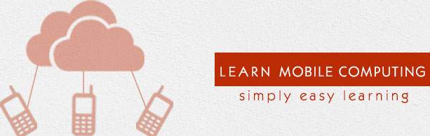

Mobile computing
Links:

Mobile Computing is a technology that allows transmission of data, voice and video via a computer or any other wireless enabled device without having to be connected to a fixed physical link. The main concept involves :
* Mobile communication
* Mobile hardware
* Mobile software.
Mobile Computing is a technology that allows transmission of data, voice and video via a computer or any other wireless enabled device without having to be connected to a fixed physical link. This tutorial will give an overview of Mobile Computing and then it will take you through how it evolved and where is the technology headed to in future along with the classifications and security issues involved.